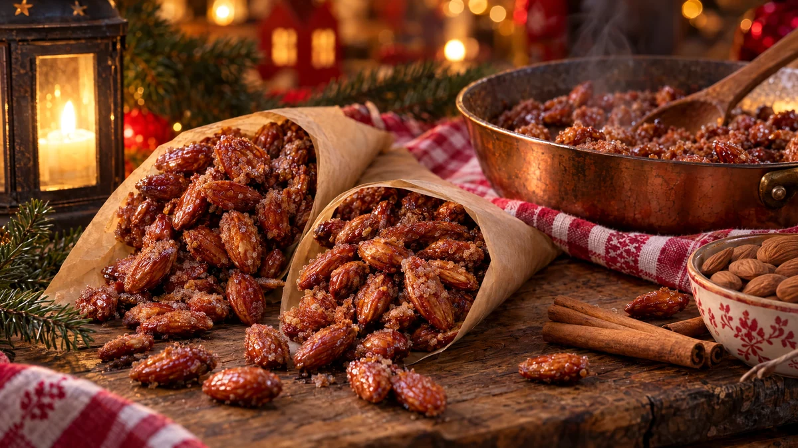

RESTFEST · RECEPTGodis & konfekt
Brända mandlar med kanel
En påse mandlar, socker, vatten och kanel. Mandlarna rörs i en het panna tills sockret först blir till sand och sedan smälter till ett knaprigt, glansigt och knöligt skal. Doften fyller hela köket som en julmarknad, och i en strut av bakplåtspapper blir de en present som tar femton minuter.
- Förberedelse
- 5 min
- Tillagning
- 15 min
- Portioner
- ca 3 dl (4 strutar)
- Nivå
- Nybörjare
 Det här behöver du
Det här behöver du
Tryck på + vid det du behöver köpa.
Gör så här
- Klä en plåt med bakplåtspapper.
- Koka upp socker, vatten, kanel, vaniljsocker och salt i en stor stekpanna eller vid kastrull med tjock botten.
- Lägg i mandlarna och låt koka på medelhög värme under ständig omrörning.
- Efter 5–7 minuter har vattnet kokat bort och sockret blir torrt och sandigt runt mandlarna. Fortsätt att röra.
- Sänk till medelvärme och rör i ytterligare 3–5 minuter, tills en del av sockret har smält igen och mandlarna har fått ett glansigt, knöligt, rödbrunt skal. Rör hela tiden så att sockret inte bränns.
- Häll ut mandlarna på bakplåtspappret och sära på dem med två gafflar medan de är varma. Låt dem svalna helt.
Dekoration och servering
- Fyll mandlarna i strutar av bakplåtspapper eller i små papperspåsar, som på julmarknaden.
- Servera dem ljumma, då doftar de som mest.
- Byt kanelen mot kardemumma, eller strö över lite flingsalt medan de fortfarande är varma.
- Hett socker ger svåra brännskador, så smaka inte förrän mandlarna har svalnat.
- Lägg pannan i blöt i varmt vatten direkt, så löser sig sockret av sig självt.
- Mandlarna håller ca 2 veckor i en lufttät burk.
Mått och ugnstemperaturer
Måtten är svenska (dl, msk, tsk, krm). Ugnstemperaturerna gäller vanlig ugn med över- och undervärme; med varmluft, sänk med 20 grader.